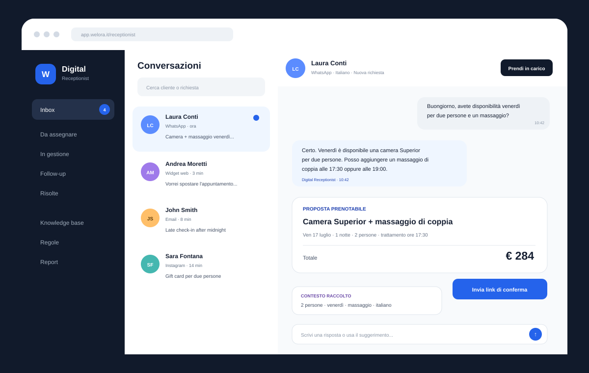

Pre-lancio · arrivo previsto 15 febbraio 2027
Tutto ciò che serve a una piccola struttura. In un solo gestionale.
Welora è pensato per B&B, affittacamere, piccoli hotel, residence e appartamenti che oggi devono scegliere tra software costosi o strumenti separati. PMS, prenotazioni, canali, check-in, pagamenti, fiscalità, servizi e automazioni lavorano sugli stessi dati.
Base completa, non a moduliTap to Pay su smartphone compatibile*Multi-sede e servizi extra inclusi
OggiBuongiorno, Villa Aurea
MR+2
AndamentoRicavi e prenotazioni
7 giorniFlusso check-in3 passaggi completati
Dati ospite e documenti raccolti
Pagamento verificato. Identificazione da completare secondo la modalità prevista dalla struttura.
Adempimenti pronti
Automazione completataTask pulizia assegnato
Incasso Tap to Pay*€ 86,00
Per chi oggi usa troppi strumenti
Il problema non è avere poche camere. È dover comprare troppi software.
Costi che si sommano
PMS, booking engine, pagamenti, adempimenti, fatture e automazioni vengono spesso venduti come prodotti o add-on separati.
Dati copiati a mano
La stessa prenotazione passa da portali, fogli, messaggi e strumenti diversi, aumentando errori e tempo perso.
Le funzioni utili arrivano troppo tardi
Una piccola struttura ha bisogno di automazione fin dall'inizio, non solo quando può permettersi un piano enterprise.
Piccole strutture, flussi completi
Welora segue il modo in cui lavori davvero.
Dal soggiorno alla vendita di un servizio indipendente, ogni operazione usa la stessa anagrafica, lo stesso conto e le stesse regole.
B&B e affittacamere
Gestisci soggiorno, incasso e adempimenti senza cambiare software.
PMS, booking engine, canali, portale ospite, check-in digitale e automazioni condividono la stessa prenotazione.
- Planning, tariffe, disponibilità e prenotazioni
- Check-in digitale e adempimenti con costi provider a consumo*
- Pagamenti online e Tap to Pay da smartphone compatibile*
- Servizi, extra e vendite anche non collegate a una camera

Welora Base
Una base completa, non un catalogo di add-on.
Le funzioni essenziali fanno parte del prodotto. Il prezzo può crescere con capacità e volumi, ma non devi cambiare piano per avere gli strumenti necessari a gestire la struttura.
PMS, planning e prenotazioni
Soggiorni, camere, unità, disponibilità, tariffe, restrizioni, note e operatività quotidiana.
PMS · planning · disponibilità · tariffeBooking engine e canali
Vendita diretta senza commissione Welora e collegamenti ai canali supportati, con inventario e prenotazioni sincronizzati.
Booking diretto · OTA · sincronizzazioneCheck-in e adempimenti*
Raccolta dati e documenti, flusso di identificazione conforme alla modalità applicabile, preparazione di Alloggiati e statistiche.
Portale ospite · identità · Alloggiati · statistichePagamenti e POS da smartphone*
Checkout, preautorizzazioni, incassi e Tap to Pay su dispositivi compatibili tramite provider abilitato.
Pagamenti · preautorizzazioni · Tap to PayServizi, beni e conti generici
Vendi colazioni, transfer, parcheggi, prodotti, noleggi, trattamenti o altri servizi anche senza collegarli a una camera.
Extra · passanti · eventi · vendite autonomeCorrispettivi e fatturazione*
Documenti commerciali, flussi fiscali e fatturazione elettronica integrati; senza registratore fisico quando la modalità adottata e la normativa lo consentono.
Documenti · corrispettivi · FatturaPAAutomazioni operative
Eventi e regole attivano task, messaggi, accessi, housekeeping, pagamenti e sistemi esterni con retry e tracciamento.
Regole · task · accessi · messaggiMulti-sede e controllo
Gestisci più strutture, utenti, ruoli e servizi mantenendo dati separati per sede e una visione centrale quando serve.
Multi-sede · ruoli · report · auditDigital Receptionist · servizio futuro separato
Quando arriverà, non sarà un chatbot: sarà un operatore digitale collegato a Welora.
Digital Receptionist è previsto come servizio aggiuntivo. Utilizzerà disponibilità, prezzi, servizi e regole reali della struttura per gestire richieste, preparare proposte, seguire il cliente e passare la conversazione a una persona quando necessario.
Capisce la richiesta
Raccoglie date, persone, preferenze, lingua e informazioni mancanti.
Legge dati reali
Consulta disponibilità, tariffe, servizi e policy dal gestionale.
Prepara il passo successivo
Proposte, link, richieste, upselling e follow-up secondo regole autorizzate.
Passa all'operatore
L'handoff conserva riepilogo, contesto e dati già raccolti.
Non è incluso nel canone Welora Base. Prezzo, disponibilità e condizioni saranno comunicati prima dell'attivazione.


Oltre la camera
Vendi e incassa anche ciò che non dipende da un soggiorno.
Una piccola struttura spesso vende molto più di un pernottamento. Welora gestisce servizi e beni con conti indipendenti, clienti passanti, aziende ed eventi, usando gli stessi pagamenti e flussi fiscali.
- Conti generici: servizi e vendite senza prenotazione camera.
- Catalogo unico: extra, prodotti, transfer, noleggi, esperienze e altri servizi.
- Stesso flusso: incasso, documento commerciale, fattura e storico cliente.
- Multi-sede: operatività locale e controllo centrale.
Automazioni operative
Ogni evento può attivare ciò che deve succedere dopo.
Le regole collegano prenotazioni, staff, messaggi, adempimenti, pagamenti e dispositivi. Il lavoro ripetitivo diventa un flusso tracciato, con retry e gestione degli errori.
OTAEmailWhatsAppPagamentiFiscalitàSerratureTermostatiOCPPAlloggiati WebStatistiche

Tre flussi, un solo sistema
Dalla prenotazione alla vendita al banco.
Arrivo ospite
Prenotazione, check-in e operazioni
Dati, pagamento, documenti, accessi e task partono dalla stessa prenotazione.

Vendita autonoma
Servizio o bene senza camera
Apri un conto, incassa e genera il documento previsto senza creare una prenotazione fittizia.
Multi-sede
Più strutture, regole coerenti
Ruoli e operatività restano separati per sede, con una visione centrale quando serve.
Pre-lancio Founding
Un solo piano core. Le funzioni essenziali non si sbloccano pagando di più.
Welora Base parte da €29/mese. Il prezzo può variare con capacità e volumi; i costi dei provider esterni restano separati e dichiarati.
Welora Base
Completo per partire
Per piccole strutture che vogliono sostituire più strumenti con un unico sistema operativo.
da29€ / mese + IVA
Founding: da €14,50/mese per i primi 12 mesi dal go-live.
- PMS, planning e booking engine
- Prenotazione diretta e 1 canale OTA incluso
- Check-in digitale e adempimenti*
- Pagamenti e POS da smartphone*
- Servizi, beni e conti generici
- Corrispettivi e fatturazione elettronica*
- Automazioni operative
- Multi-sede, ruoli e audit
- Nessuna commissione Welora sulle prenotazioni dirette
Servizio futuro
Digital Receptionist
Un servizio aggiuntivo che sfrutterà i dati e i flussi di Welora senza trasformarsi in un gestionale separato.
Separato
- Widget web e inbox operatore
- Canali di messaggistica previsti
- Disponibilità e prezzi reali
- Proposte e richieste prenotabili
- Follow-up e upselling controllato
- Handoff umano con contesto
- Prezzo e disponibilità comunicati prima dell'attivazione
Lancio commerciale previsto: 15 febbraio 2027.Programma Founding: primi 50 aderenti entro il 31 gennaio 2027, -50% sul canone Welora Base per 12 mesi dal go-live e prezzo di listino bloccato per i successivi 12 mesi. Nessun pagamento prima dell'attivazione; condizioni definitive confermate prima della sottoscrizione.
Sempre incluso: aggiornamenti, backup, ruoli e permessi, audit, accesso web e mobile ed esportazione dati. IVA esclusa. Costi e commissioni di provider esterni non sono inclusi.
* Welora Base include il collegamento a 1 canale OTA; ogni canale aggiuntivo costa €10/mese + IVA. Lo sconto Founding si applica al canone Base, non ai canali aggiuntivi. Possono applicarsi costi a consumo o commissioni del provider per verifica identità/check-in, pagamenti e Tap to Pay, OTA, servizi fiscali e altri servizi terzi. Il check-in digitale non sostituisce gli obblighi di identificazione previsti dalla normativa: la verifica dell'ospite deve essere svolta con la modalità richiesta nel caso concreto. L'uso senza registratore telematico fisico dipende dalla soluzione fiscale adottata e dai requisiti normativi applicabili.
Il valore dell'automazione
Quanto può recuperare una gestione più automatizzata?
Una stima indicativa di richieste recuperate, tempo amministrativo risparmiato e vendite aggiuntive.
Potenziale mensile recuperabile€ 3.085Richieste recuperate18 Tempo liberato26 h Valore del tempo€ 520
Stima indicativa basata su recupero del 50% delle richieste perse e automazione del 60% delle ore manuali. Non rappresenta una garanzia di risultato.
Domande frequenti
Quello che una piccola struttura deve sapere prima di aderire.
Il messaggio è semplice: la base deve essere utile da sola. Le dipendenze e i costi esterni vengono indicati separatamente.
Per chi è Welora?
Il lancio è pensato prima di tutto per B&B, affittacamere, piccoli hotel, residence, appartamenti e strutture ricettive con team ridotti che vogliono gestire più flussi in un unico sistema.
Cosa include Welora Base?
PMS e planning, prenotazione diretta, 1 canale OTA incluso (ogni canale aggiuntivo €10/mese + IVA), portale ospite, check-in digitale, pagamenti, servizi e vendite autonome, fiscalità integrata, automazioni, ruoli e gestione multi-sede. Il prezzo può scalare con capacità e volumi, non con lo sblocco delle funzioni essenziali.
Posso usare il telefono come POS?
Sì, con smartphone e provider compatibili tramite Tap to Pay. Non serve un lettore separato nei casi supportati; restano applicabili le commissioni e i requisiti del provider.
Il check-in è completamente automatico?
Welora automatizza raccolta dati e documenti, passaggi di verifica, preparazione degli adempimenti e ricevute dove supportato. L'identificazione dell'ospite deve comunque rispettare gli obblighi applicabili; il provider di verifica può prevedere un costo per check-in.
Posso vendere un servizio o un bene senza associarlo a una camera?
Sì. I conti generici permettono di gestire passanti, clienti, aziende, eventi, servizi ed extra con incassi e documenti propri.
Posso gestire più sedi?
Sì. La piattaforma è multi-struttura: sedi, utenti, ruoli e dati possono essere gestiti separatamente, mantenendo una visione centrale. Il canone può variare in base alla scala d'uso.
Posso emettere documenti e fatture senza una cassa fisica?
Welora integra documenti commerciali, corrispettivi e fatturazione elettronica. L'assenza di un registratore telematico fisico è possibile soltanto quando la soluzione fiscale adottata e la normativa applicabile lo consentono; eventuali costi del provider fiscale restano separati.
Digital Receptionist è incluso?
No. È un servizio futuro separato, pensato per usare i dati reali di Welora nelle conversazioni e nei flussi autorizzati. Prezzo e data di disponibilità saranno comunicati prima dell'attivazione.
Quando sarà disponibile?
Il lancio commerciale è previsto per il 15 febbraio 2027. Il programma Founding raccoglie adesioni in pre-lancio e prevede il 50% di sconto per i primi 12 mesi dal go-live, nei limiti e alle condizioni indicate.
Programma Founding
Prenota ora il -50% senza pagare prima dell'attivazione.
Ti contatteremo per verificare che Welora sia adatto ai tuoi flussi e per preparare l'onboarding prima del lancio.
✓ -50% per 12 mesi dal go-live✓ Prezzo di listino bloccato per altri 12 mesi✓ Priorità nell'onboarding